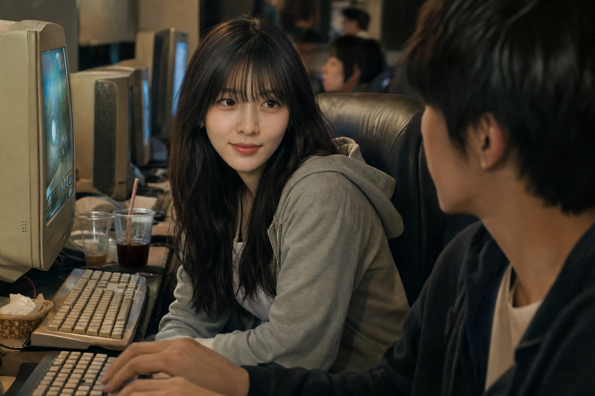

ep.023 여자친구 아닌데
[김용식] "남자 선배들도 온다고?"
[김초연] "응."
[김용식] "몇 명인데."
[김초연] "몰라."
[김용식] "어디서 마셔?"
[김초연] "왜."
전화 너머의 김초연 목소리가 바로 낮아졌다.
[김초연] "나 아직 네 여자친구 아닌데?"
맞다.
정확히 맞다.
하지만 그 말은 치사했다. 어제까지 채점하던 사람이 갑자기 시험 감독 권한을 내려놓았다. 김용식은 폴더폰을 귀에 붙인 채 한참 천장을 봤다.
[김용식] "걱정돼서."
[김초연] "뭐가?"
[김용식] "술자리니까. 모르는 선배들도 있고."
[김초연] "나 술 못 마시는 애 아니야. 그리고 내가 싫으면 싫다고 할 수 있어."
[김용식] "응. 그걸 못 믿어서 묻는 것처럼 들렸으면 미안해."
전화 너머가 조용해졌다.
이번엔 김초연도 바로 받아치지 않았다.
[김초연] "너 오늘 이상하네."
[김용식] "좋은 쪽?"
[김초연] "아직 몰라. 근데 방금은 덜 짜증 났어."
아직.
그 말이 희망처럼 들리는 날이 오다니.
다음 날 오후.
PC방은 평소처럼 시끄러웠다. 라면 냄새와 담배 냄새, 오래 켜 둔 컴퓨터의 열기가 입구부터 밀려왔다. 김초연은 먼저 와 있었다. 두 자리 중 안쪽 자리에 앉아 카트라이더를 켜 놓고 있었다.
[김초연] "늦었어."
[김용식] "오 분."
[김초연] "오 분은 괜찮아."
[김용식] "그 말 이제 좀 무서워."
[김초연] "잘 배웠네."
그녀는 마우스를 까딱였다.
[김초연] "한 판 해."
게임이 시작됐다.
김초연은 오늘 유난히 공격적이었다. 부스터를 모으자마자 들이받고, 코너마다 김용식 차체를 밀었다. 화면 속 카트가 벽에 닿을 때마다 의자 다리가 바닥을 조금씩 긁었다.
[김용식] "게임에서까지 몰아붙이면 반칙 아니냐?"
[김초연] "운전 연습이야."
[김용식] "내 차로는 하지 마."
[김초연] "네 차는 너무 비싸. 게임에서나 박아 봐야지."
김용식은 순간 손가락이 꼬였다. 카트가 벽에 박았다.
[김초연] "어. 박았다."
[김용식] "말로 사람 흔드는 실력이 늘었네."
초연이 웃었다.
웃음이 나왔다.
그걸 보는 게 좋았다. 어제보다 훨씬.
게임이 끝나고, 김초연은 의자를 살짝 돌렸다. 모니터 불빛이 그녀의 볼에 파랗게 닿았다.
[김초연] "왜 안 태워줬어?"
[김용식] "정다은?"
[김초연] "응."
[김용식] "네가 싫어할 것 같아서."
김초연은 바로 대답하지 않았다. 키보드 위에 손가락만 올려뒀다.
[김초연] "그럼 내가 시켜야만 해?"
김용식은 그 말을 예상하지 못했다.
[김초연] "내가 손목 잡으면 빼라고 해야 빼고, 말하라고 해야 말하고, 숨기지 말라고 해야 안 숨겨? 그러면 그건 내가 시킨 거잖아. 네가 한 게 아니라."
[김용식] "아니."
[김초연] "그럼?"
김용식은 모니터를 봤다. 리플레이 화면에서 카트가 벽에 또 박고 있었다. 참 일관적이다.
[김용식] "내가 생각해도 애매해서. 네가 싫어할 것 같아서도 맞는데, 내가 계속 그러면 나도 별로인 사람이 되는 것 같았어. 누가 볼 때만 조심하는 사람 말고, 안 봐도 선 긋는 사람이 돼야 하잖아."
김초연의 손가락이 멈췄다.
그녀는 김용식을 봤다. 눈빛이 조금 풀렸다.
[김초연] "별로인 사람 맞았잖아."
[김용식] "과거형으로 해줘서 고맙다."
[김초연] "현재진행형일 수도 있어."
[김용식] "채점이 너무 엄격해."
[김초연] "천 점 만점이라니까. 삼 점 오른 사람은 조용히 해."
둘 다 웃었다.
짧게.
하지만 진짜였다.

저녁이 가까워지자 김초연은 가방을 챙겼다. 후드티 소매를 손등까지 내리고, 폴더폰을 가방 안쪽 주머니에 넣었다.
[김용식] "술자리 오늘이야?"
[김초연] "응."
[김용식] "어디서 해?"
김초연은 눈썹을 올렸다.
김용식은 말을 고쳐 잡았다.
[김용식] "물어봐도 돼? 싫으면 대답 안 해도 돼."
[김초연] "그렇게 물으면 괜찮고."
어렵다.
하지만 조금 알 것 같았다.
정답은 질문을 못 하게 하는 게 아니다. 상대의 결정을 잡아당기지 않는 말투다.
[김초연] "학교 앞 호프집. 과 애들이랑 선배들."
[김용식] "몇 시까지?"
[김초연] "몰라. 분위기 봐서."
[김용식] "늦으면 전화해."
[김초연] "데리러 오게?"
[김용식] "네가 원하면."
김초연은 가방끈을 만졌다.
[김초연] "안 원하면?"
[김용식] "안 가. 걱정은 하겠지만, 안 가."
[김초연] "진짜?"
[김용식] "응."
[김초연] "거짓말."
[김용식] "조금. 아마 폰은 계속 볼 거야. 그래도 네가 부르기 전엔 안 갈게."
김초연이 웃었다.
[김초연] "솔직해서 봐준다."
그녀는 PC방 문을 열고 나갔다.
김용식은 따라 나가지 않았다. 카운터 앞에서 음료수를 하나 더 샀다. 차가운 캔을 손에 쥐자 손바닥 열이 조금 내려갔다.
뚜껑을 열자 단톡이 울렸다.
바로 이어서 김초연의 문자가 왔다.
김용식은 두 화면을 번갈아 봤다.
하나는 해야 하는 일.
하나는 신경 쓰이는 사람.
둘 다 답장을 기다리고 있었다.
그는 먼저 김초연에게 답장을 썼다.
쓰고 보니 또 잔소리 같았다. 지우려다 멈췄다. 걱정을 완전히 예쁜 말로 만들 재주는 아직 없었다. 대신 한 줄을 더 붙였다.
전송하고 나서야 정다은의 문자를 열었다.
두 개의 답장을 보내고 나니 손바닥이 조금 식었다. 카운터 위의 냉장고가 웅, 하고 낮게 울었다. 음료수 캔의 물기가 손가락에 묻었고, 그는 그 차가운 감각을 괜히 오래 쥐고 있었다.
좋아하는 사람을 믿는다는 건, 아무것도 안 느끼는 일이 아니었다.
느끼면서도 함부로 움직이지 않는 일이었다.